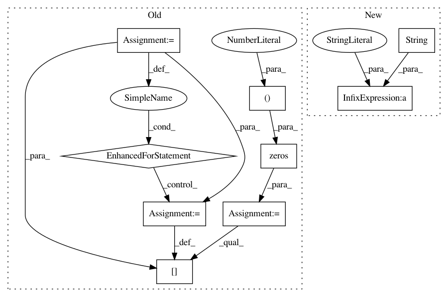

562508c5edf9988078f3ca4300e1d6be569a4b8f,python/timeseries/timeseries_customRNN.py,TsRNNCustom,predict,#TsRNNCustom#Any#Any#,141
Before Change
if self.n_inputs != 1:
raise ValueError("Currently only supports univariate input per time-step")
preds = list()
x = np.zeros(shape=(1, self.n_lag, 1), dtype=np.float32)
for i in range(self.n_lag):
x[0, i, 0] = start_ts[i]
init_state = np.zeros(shape=(1, self.state_size))
for i in range(n):
yhat = self.predict_op.eval(feed_dict={self.X: x,
self.init_state: init_state})
After Change
if self.n_inputs != 1:
raise ValueError("Currently only supports univariate input per time-step")
seq = list(np.reshape(start_ts, newshape=(-1,)))
logger.debug("seq: %s" % str(seq))
preds = list()
init_state = np.zeros(shape=(1, self.state_size))
for i in range(n):
In pattern: SUPERPATTERN
Frequency: 3
Non-data size: 9
Instances
Project Name: shubhomoydas/ad_examples
Commit Name: 562508c5edf9988078f3ca4300e1d6be569a4b8f
Time: 2018-04-01
Author: smd.shubhomoydas@gmail.com
File Name: python/timeseries/timeseries_customRNN.py
Class Name: TsRNNCustom
Method Name: predict
Project Name: IBM/adversarial-robustness-toolbox
Commit Name: 601d77a77a55323770bb2b214aa8844538b13d1f
Time: 2018-09-25
Author: Maria-Irina.Nicolae@ibm.com
File Name: art/visualization.py
Class Name:
Method Name: convert_to_rgb
Project Name: deepchem/deepchem
Commit Name: 4270c3dae0b80b384c4a0026e2043345904b4fe5
Time: 2016-08-31
Author: bharath.ramsundar@gmail.com
File Name: deepchem/featurizers/atomic_coordinates.py
Class Name: NeighborListAtomicCoordinates
Method Name: _featurize